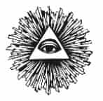

YİRMİ BEŞİNCİ BÖLÜM
TERÖR DOLARLARI
TEKSAS
1999 yılında Fransız Parlamentosu, küresel para aklama konusunda derinlemesine ve geniş çaplı bir soruşturmaya izin verdi. Liechtenstein, Monaco ve İsviçre hakkında raporlar yayınladıktan sonra, “Londra Şehri, Gibraltar36 ve Tacın Sömürgeleri: Kirli Paranın Deniz Aşırı Sığınakları” adlı bir rapor yayınladı. Bu raporun eklerinden birinin adı “Usame Bin Ladin’in Ekonomik Ortamı” idi. Rapor, kırk İngiliz bankasının, şirketinin ya da kişisinin bin Ladin’in ağıyla ilişkisi olduğunu, bunların arasında Londra, Oxford, Cheltenham, Cambridge ve Leeds’deki örgütlerin de bulunduğunu anlatıyordu. Raporun girişinde, Fransız milletvekili Arnaud Montebourg şöyle bir sonuca vardı:
“Tony Blair ve hükümeti terörizm karşıtı söylevler verip duruyorlar. Bu söylevleri kendi bankerlerine vermesi ve kirli paradan uzaklaşmalarını istemesi gerekir. İsviçreliler bile İngilizlerden daha çok yardımcı oldular.”
Raporda, BCCI’nın en büyük hissedarı olan, Bush ailesiyle ve CIA ile yakın bağları bulunan, aynı zamanda da Suudi hükümetinde önemli bir kişi olan Halit bin Mahfuz’dan söz ediliyordu. Yine de, bin Mahfuz’un temsilcileri daha sonra bu raporun aslında Jean Charles Brisard tarafından yazıldığını, bu kişinin de “Yasak Gerçek” kitabının yazarı ve bir Fransız istihbarat ajanı olduğunu öne sürmeyi becerdiler. Bin Mahfuz, Brisard’a karşı bir karalama harekâtına girişti ve şerefini lekeleyen bağlantılar kurmuş olduğunu öne sürdü.
Bin Mahfuz, yine benzer biçimde Fotrune Dergisi’nin, Washington Post’un, USA Today gazetesinin de teröristlere para yardımı yaptıklarını iddia ederek, onların da geri çekilmelerini sağladı. CIA eski müdürü James Woolsey, bir meclis komisyonunda Halit bin Mahfuz’un, bin Ladin’in kayınbiraderi olduğuna tanıklık etti ama adı yanlış telaffuz ettiği ortaya çıkınca bu ifadesini geri almak ve bu bilginin doğruluğundan emin olmadığını söylemek durumunda kaldı. Yine de, Yasak Gerçek’in yazarı şu bilgiyi doğru veriyordu:
“Halit bin Mahfuz, BCCI olayında kilit bir isimdi. 1986 ile 1990 arasında burada operasyon yöneticiliği yapan, üst düzey bir yöneticiydi. Ailesinin o sırada bankada % 20 hissesi vardı. Bankanın çökmesiyle, 1992 yılında ABD’de vergi kaçakçılığıyla suçlandı. 1995 ‘te BCCI’nın çökmesinde etkili olmaktan suçlu bulundu ve bankanın alacaklılarına 245 milyon dolar ödemeyi kabul edip, müşterilerin zararının bir bölümünü tazmin etti. Bankaya karşı suçlamalar arasında zimmete para geçirmek ve Amerikan, Lüksemburg ve Britanya bankacılık yasalarını ihlal etmek vardı.”
2002 yılında başka bir soruşturma, bin Mahfuz’un bin Ladin’i desteklemek için hayır kurumlarına yardımlarda bulunduğunu ortaya çıkardı. Yine de bin Mahfuz, Bush ailesiyle yakın iş bağlarını sürdürdü. Hepsinden önemlisi, 1980’lerde bin Mahfuz’un banka sendikası, CIA destekli banka operasyonlarından önemli olanları gerçekleştirmişti. Bunlar arasında Usame bin Ladin, Saddam Hüseyin, Manuel Noriega gibi uyuşturucu kaçakçısı eski CIA ajanları için yapılanlar da vardı. Ancak, zengin ve önde gelen Suudi ailelerinden birinin başı olan ve Usame bin Ladin’in on yedi kardeşinden biri olan Salem bin Ladin 1988’de öldüğünde, Halit bin Mahfuz onun Houston’daki işlerini miras aldı. Fransız gizli istihbarat raporlarından birinde Salem, Suudi kralının en yakın iki dostundan biri ve Suudi Arabistan için çalışan bir ajan olarak tanımlandı. Salem’in ABD’deki tek temsilcisi James Bath idi ve kendisi de o zamanlar bin Mahfuz’un işlerini yürütüyordu ve BCCI’nın Houston’daki yüzü olan Gait Farun’la ortaktı. James Bath, bin Ladin ailesiyle de, BCCI’daki önemli oyuncularla da yakın bağlar kurmuştu. Time dergisi 1991 yılında Bath’ı “bağlantıları CIA’dan başlayıp BCCI yöneticilerine uzanan bir arabulucu” olarak tanımladı. Bath, 1976 yılında, o zamanki CIA Başkanı George Herbert Bush tarafından alındı ve CIA parasının ve uçaklarının Teksas’la, Suudi Arabistan arasında gidip gelebilmesini sağlayacak deniz aşırı şirketler kurmak için kullanıldı.
James Bath’ın eski iş ortaklarından olan, eski Annapolis mezunu ve ABD Deniz Kuvvetleri’nde pilot olan Charles W. “Bill” White, Bath’ın Suudi parasını ABD’ye hortumlamak için kullanılan gizli bir işe bulaştığını öne sürdü. Ayrıca, 1976’dan beri CIA’nın Suudi Arabistan bağlantısı olarak kullanıldığını da söyledi. Bath, 1990’ların başına kadar bin Mahfuz’la, Güneybatı Havayolları Şirketi dolayısıyla bağlantıdaydı. Bu şirket, başkan Houston’dayken onun özel uçağının (Hava Gücü 1) ikmalinden sorumlu olan şirketti.
Bath aynı zamanda, Cayman Adaları merkezli ve bin Mahfuz’a ait bir havacılık şirketi olan Skyway Aircraft Leasing Ltd. Şirketi’ni de yönetti. Cotopax şirketinin geçici yönetim kurulu, kurulduğu ay içinde Bath’ı şirket müdürü yaptı, şirketin adını Skyways olarak değiştirdi ve topluca istifa ederek Bath’i tek yönetici olarak bıraktılar. Cotopax’ın ilk hissedarlarından birisi, Cayhaven Hizmetler Ltd. idi ve bu şirket aynı zamanda IC A.Ş.’nin de ortağıydı. Aslında IC A.Ş., Cayman Adaları Uluslararası Kredi ve Yatırım’la (ICIC) aynı şirketti ve Kerry Komisyonu raporuna göre “BCCI’nın banka içinde bankasıydı.” Yani, James Bath’in Skyways Havacılık’ı, Mahfuz’un BCCI’si ile IC A.Ş. üzerinden bağlıydı. Şirket, Oliver North’un Beyaz Saray kasasında bulunan ve İran Kontra harekâtını anlatan bir çizelgeye göre kurulmuştu.
Bath, George W. Bush’un yakın bir aile dostuydu. 1970’lerin başında ikisi Teksas Ulusal Muhafızları’nda birlikte jet uçurmuşlardı. 1979’da Bush’un ilk işi olan Arbusto Enerji, parasını Bath’ten borç almıştı. George Ball gibi pek çok yatırımcıdan biri olarak Bath, Bush’a elli bin dolar verip, Arbusto’nun yüzde beş hissesini almıştı. “Haydut Banka” kitabında Beatty ve Gwynne, Bath’ın Arbusto’ya yaptığı yatırımın aslında bin Mahfuz’un parası olabileceğini, çünkü genç George Bush’un “O günlerde doğru dürüst parası olmadığını” anlatırlar.
Pek çok dönüşümden sonra Arbusto, 1986 yılında Harken Enerji Şirketi olarak ortaya çıktı. Harken’in yönetim kurulu başkanı Alan Quasha’nın babası ve Manilalı bir avukat olan William Quasha, üst düzey CIA ve Pentagon yetkililerini de kullanan ve skandallarla örülü Avustralya Nugan Hand Bankası’nı kullanmalarını onlara öğütleyen kişiydi. 1983 tarihli bir Avustralya devlet raporuna ve Wall Street Journal’a göre, eski CIA Başkanı William Colby onların avukatıyken, Nugan Hand Bankası uluslararası eroin çetelerinin paralarını aklamış ve ABD’nin gizli harekâtlarına para sağlamıştı. Richard Secord, Casper Weinberger gibi, 1970’lerde Nugan Hand Bankası yöneticileriyle iş yapan ve İran Kontra harekâtında merkezi roller üstlenen kişilerin bazıları, sonra Başkan Bush tarafından affedildiler.
1987 yılında Harken sıkıntıya düştüğü zaman % 17.6 hissesi, bin Mahfuz’un bankasının müşterisi ve Farun’un iş ortağı olan Suudi Şeyh Abdullah Taha Bakş tarafından satın alındı. Gerçi Bush, BCCI’nin Harken’in işleriyle ilgisi olduğu konusunda “fikri bile olmadığını” söyledi. Ancak Bush’la, BCCI arasındaki bağlantılar o kadar güçlüydü ki, Wall Street Journal şöyle bir sonuca vardı: “George Bush işin içine girdikten sonra Harken’le iş yapan BCCI bağlantılı kişilerin sayısındaki artış, acaba başkanın oğluna kılıf mı uyduruyorlar sorusunu akla getiriyor.” Bath sonunda Suudi iş bağlantıları yüzünden 1992 yılında FBI soruşturmasına tabi tutuldu ve Suudi parasını Houston üzerinden aktararak, Reagan’ın ve birinci Bush hükümetinin dış politikasını desteklemekle suçlandı.
1987 yılında Harkan Petrol ve Gaz Şirketi’nin planı 25 milyon dolarlık yatırımı İsviçre Union Bankası ile BCCI ortaklığı olan Fransız Ticaret ve Yatırım Bankası’ndan (BCP) sermaye olarak almaktı. BCP’nin yönetici müdürü Dr. Hartmann’dı. Sermaye,Dr. Hartmann ve Bruce Rappaport sayesinde alındı. Mahfuz’un pek çok bankadan oluşan küresel ağıyla ilintili olan Cenevre ve New York Deniz Ticareti Bankası, aynı zamanda birçok gizli CIA harekâtına da bağlıydı. O zamanki CIA Başkanı William Casey’in golf arkadaşı olan Rappaport’un, gizli hesaplar ve İran’a yasadışı silah satışı gibi işlerde Oliver North’la ortak olarak BCCI olayına derinden bulaştığı çok açıktı.
Dr. Hartmann, aynı zamanda başka bir suçlu banka olan İtalyan Lavoro Ulusal Bankası’nın (BNL) da İsviçreli ortağının müdürüydü. 1992’deki meclis tutanaklarına göre, BNL ile ABD Bankacılık Komisyonu Başkanı Henry Gonzales ilişkiliydi ve milyarlarca dolarlık yasa dışı silahı Çöl Fırtınası öncesinde Bush hükümetinden Saddam Hüseyin’e borç olarak vermişlerdi.
Harken’in BCP’den para alabilmesinin altyapısı Little Rock’tan Jackson Stephens tarafından kuruldu. Asya Wall Street Journal’a göre, bu kişi ABD bankacılık düzenlemelerine uymuyordu. Sonuçta, anlaşmayı yeniden yapılandırırken UBS hisselerini satmaya karar verdi. Stephens’in, UBS hisseleri için bulduğu yeni alıcı Şeyh Abdullah Bakş idi. Ancak 1992 yılında kongrenin BCCI soruşturmasına göre Bush, adalet bakanlığının BCCI’nın suçlamasını engellemek için büyük çaba gösterdi. Kongre araştırması, federal memurların kongrenin ve yerel güçlerin araştırmalarını defalarca engellediklerini, üç yıl boyunca Manhattan Savcısı Robert Morgenthau’nun önemli bilgilere ulaşma çabalarını kösteklediklerini ortaya çıkardı. Kongre muhbirinin sonucuna göre, 1990 ve 1991 yıllarında Bush, bakanlığı, Başsavcı Robert Muller’in önderliğinde sürekli olarak bankanın üstüne gittiklerin yanılgısını yarattı. Ancak muhbir, adalet bakanlığının aslında “Başkalarının araştırmasını engellemek için tanıklara ulaşılmasını zorlaştırarak,telefonları açmayarak, hiçbir şey yapmadıkları halde bu konuyu araştırdıklarını söyleyerek” herkesi engellediğini anlattı.
1996’da Fransız İstihbaratı, Suudi milyonerleri Paris’teki Hotel Royale Monceaus’ta gözetlerken, El Kaide temsilcisi olan bir Suudi prensiyle, Müslüman olan ve olmayan silah tüccarları arasındaki bin Ladin’e ne kadar pay verileceğini tartıştıkları toplantıyı dinleyerek daha ciddi suçlara da ulaştı. “Yasak Gerçek”in yazarı Jean Charles Brisard’a ve gazeteci Greg Palast’a göre, Şeyh Abdullah Bakş ve Halit bin Mahfuz bu toplantıdaki yirmi kadar kişinin arasındaydılar. Aynı zamanda Prens Türki el Faysal ve İran Kontra hareketi ajanı Adnan Kaşıkçı da vardı. Ancak Mahfuz’un temsilcileri onun bulaştığını yalanlıyorlar ve El Kaide temsilcileriyle hiçbir görüşme yapmamış olduğunu söylüyorlar. Yine de Mahfuz, Brisard’a karşı karalamalara başladı ve iddialarının asılsız olduğunu öne sürdü.
Anlaşmaya göre, bin Ladin Suudi Arabistan’a saldırmayacaktı. Bu, sözde 1991 yılına dayanan bir anlaşmaydı. “Amerika Neden Uyudu?” eserinde Gerald Posner, hâlâ gizli olan bir ABD istihbarat raporunda bu gizli anlaşmanın bin Ladin’le Suudi İstihbarat Bakanı Prens Türki el Faysal arasında yapıldığı bilinmektedir. Taraflar aynı zamanda bin Ladin’in Çeçenistan, Bosna ve diğer yerlerde Vahhabiliği yaymasının da ödüllendirileceği konusunda anlaşmışlardır.
Bu sözde hesaplaşmanın, bin Ladin işini iyi yaptığı için onu ödüllendirmek amaçlı olduğu açıktır. Bu biçimde bin Ladin, Suudi Arabistan’daki sorunlarla ilgilenmediği, oradaki hanedanın berbat aşırılıklarına rağmen Amerika’nın Haçlı Seferlerini desteklemekle uğraştığı halde, kendi yandaşları arasında utanmayacaktı. Bin Ladin böylece söylemini bütünüyle ikiyüzlü görünmeyecek biçimde değiştirdi. “İslam’ın İki Yüzü” eserinde Stephen Schwartz’ın belirttiği gibi, “Amerika’ya Karşı Savaş Bildirisinin” içeriği hakkında bin Ladin, Suudilere şikâyet ederken, “Devrimci bir düşman gibi değil, bir eleştirmen gibi yaklaşıyordu.” Şöyle devam eder:
“Bin Ladin’in yazdığı her şeyde, bazı şeyleri söylememek için lafı fazla uzattığı sezilir. Bu şeyler, Suudi hükümdarların kişilikleriyle ilgiliydi. Bin Ladin krallıktaki para kaynaklarını kullanırken, sessizlik siyaseti dışında çaresi yoktu ve korkusunu gösteremezdi. Bin Ladin, büyük bir stratejist değildi; Hitler ya da Stalin tarzında, fırsatçı bir doğaçlama ustasıydı. Suudi toplumu tarafından ABD birliklerini kovmak üzere çağırıldığında, Amerikalıları öldürmelerini öğütledi. Ancak Suudi vatandaşları kendi hükümetlerinin siyasetini düzeltmeye davet ederken, Suudi yöneticilere karşı öldürme ya da terör yöntemleri önermedi. Bunun yerine, krala verilmek üzere imza toplanmasını ve Suudi kadınların Amerikan ürünlerini boykot etmelerini istedi. Suudi ordusunun Körfez Savaşı’nda işe yaramamış olmasından üzgündü ama Irak’ın darmadağın olmasından da çok üzgündü. Suudilerin ya da diğer Arap hükümetlerin aksine, Saddam Hüseyin üzerindeki BM yaptırımlarının kaldırılmasını istiyordu.”
Eğer bin Ladin içten olsaydı, hem asıl suçlu olan Amerikalı “Haçlılar” ile iş birliği yapan, hem de İslam’ı devirmek için Şeytan komplosuna hizmet eden kişilerle bu karşılıklı hesaplaşmaları kabul etmezdi. Dünyanın en zengin adamlarından biri olan ve bütün İran Kontra harekâtının merkezindeki silah tüccarı olan Adnan Kaşıkçı, bin Ladin ailesinin eski dostuydu. Adnan Kaşıkçı’nın babası, Muhammed bin Ladin’in doktoruydu ve Salem bin Ladin için bir kamyon ihracatı ayarlamasıyla işine başlamıştı. Oliver North’un ısrarı üzerine, 1985 yılında bin Mahfuz’un Suudi Ulusal Ticaret Bankası, yasa dışı yollarla İran’a satacak silahlar satın alması için Kaşıkçı’ya 35 milyon dolar borç verdi.
NEO NAZİLER
Kaşıkçı, Peter Munk’la birlikte kurduğu Kanadalı bir şirket olan Barrick Altıncılık yoluyla, BCCI ve CIA’nın yüzü olan Şeyh Kemal Adem’le bağlantı kurdu. Barrick Altıncılık, Uluslararası Barrick Hammadde (BRI) şirketinin bir uzantısıydı. Bu firma iki yıl önce Kermit Roosevelt tarafından CIA’ya paravan olabilmek için kurulmuştu. Şirketin yatırımcıları, Şeyh Kemal Adem, Adnan Kaşıkçı ve CIA içinde “domuz otu” kod adıyla bilinen, Barrick’in büyük ortaklarından Prens Abdülaziz gibi CIA bağlantılı Suudilerdi. Kaşıkçı, İran kontra skandalından kısa zaman önce kendini Barrick Altıncılık’tan uzaklaştırmayı becermişti ama hisselerini satmadı ve North’un İran’a silah satışının tazminatı saydı.
Prens Türki el Faysal da, Lüksemburg yetkilileri tarafından bin Ladin’le doğrudan bağlantısı olduğu belirtilen Suudi Arabistan’ın Faysal İslam Bankası’nın başıydı. Faysal Bank, tarafsızlaşmış bir İtalyan olan ve Mısır Müslüman Kardeşler’inin ve Cami El İslamiye’nin üyesi Yusuf Nada tarafından kurulmuştu. Nada da, İkinci Dünya Savaşı’nın değerli Nazilerindendi. Gençken Müslüman Kardeşler’in “gizli koluna” katılmıştı ve Alman Askeri İstihbaratı tarafından alınmıştı. Baş Müftü Hüseyni 1945 yılında Nazilerin yenilmekte olduğu Almanya’dan kaçmak zorunda kalınca, onun İsviçre üzerinden Mısır’a ve sonra Filistin’e kaçabilmesi işini Yusuf Nada’nın SS’ler sayesinde düzenlediği söylenir.
Nada, El Takva adlı uluslararası bir banka grubunun başkanlığını yaptı. Kelime anlamı “Tanrı Korkusu” demek olan El Takva,Filistin’deki Hamas da dâhil olmak üzere dünyanın dört bir yanındaki Müslüman aşırı örgütlere para aktarıyordu. El Takva’nın bir uzantısı olan Nada Yönetimcilik’te Ahmet Huber adında, İslam’ı kabul etmiş ve adını Albert’ten Ahmet’e çevirmiş bir gazeteci olan bir Neo Nazi çalışıyordu. Avrupa’nın neo faşist çevrelerinde iyi tanınan bir isim olan Huber, Almanya Anayasayı Koruma Müdürlüğü’nün tanımına göre, aynı zamanda kendine Avalon diyen ve “eski Kelt geleneğine” bağlı olduğunu söyleyen bir gruba üyeydi. Her gün dönümünde bir ormanda Avrupalı birkaç yüz druidle ay ışığı altında buluşuyordu ve birlikte “çöküşümüzün sonunu” hazırlıyorlardı. Thule Topluluğu içinde de, “Büyük Almanya’nın” yeniden toparlanması için çabalıyordu.
Nada, terörizmi ve bin Ladin’i desteklemek amacıyla El Takva’yı kurmuş olduğu söylenen Francios Genoud tarafından yönetim kurulu başkanı yapılmıştı. London Observer tarafından “dünyanın önde gelen Nazilerinden” olarak tanımlanan Genoud, Nazi-İslamcı ilişkilerin sürmesinde kilit bir rol oynadı. Cezayir’de Otto Skorzeny’nin eski ortağıydı ve iddiaya göre Odessa ağının kurulması sırasında, Üçüncü Reich’ın Yahudilerden çalmış olduğu hazineleri kullanarak para desteği sağlamıştı. Genel kanıya göre Genoud, aynı zamanda 1972 yılındaki Lufthansa Bombay uçağının Filistin’in Kurtuluşu İçin Halk Cephesi (PLFP) tarafından kaçırılması işini de örgütlemişti. Ayrıca, Mahfuz’un Suud Yatırım Şirketi (SICO) da Suudi Bin Ladin grubuyla ortaktı. SICO, 1980’lerin sonlarında BCCI’nın kontrolündeki Umman Ulusal Bankası yoluyla Afganistan’daki mücahitleri gizlice desteklemişti. SICO’nun Usame bin Ladin’e para aktarmasını düzenleyenler, Uluslararası Denizcilik Bankası’nın en üst düzey iki yetkilisi olan Alfred Hartmann ve Bruce Rappaport’tu. Şirketin başında İslam bin Ladin vardır. Yönetim kurulu Beatrice Dufour, Boudoin Du-nant ve Tilouine el Hanefi’den oluşur. Lafour, İslam bin Ladin’in baldızıdır. İran kökenli olan bu kadın, İsviçreli bir bankacıyla evlidir. Baudoin Dunant, Fransızca konuşan İsviçre’nin önde gelen avukatlarındandır ve Cenevre, Fribourg, Morges ve Nyons’daki yirmiden fazla şirketin yönetim kurulundadır. 1983 yılında Nazi banker Francois Genoud’yu temsil ettiği için uluslararası ün kazanmıştır.
Suudi Ulusal Ticaret Bankası’nın (NCB) en tepesindeki isim olan Sami Baarma, Mahfuz’un Orta Doğu Sermaye Grubu’nun (MECG) yönetim kurulundadır, bu kurulu Şeyh Bakş yönetir. Baarma ayrıca, bir zamanlar eski Başkan George H. W. Bush’u baş danışman olarak kullanmış olan Carlyle Grubu’nun da yönetimindedir. Carlyle, ABD’nin en büyük on birinci askeri müteahhididir ve George W. Bush’un 2000 başkanlık kampanyasının da en büyük destekçilerindendir. Eski başkan George H. W. Bush, Bin Ladin ailesini Carlyle Grubu’nu desteklemeye ikna etmek için en azından iki kere Suudi Arabistan’a gitmiştir.
Carlyle Grubu’nun ileri gelen Suudilerle ilişkileri, Usame bin Ladin’in aileden uzaklaşmış olması nedeniyle özellikle bulanıktır. Wall Street Journal’a göre:
“Usame’yle ayrı düşmüş olduklarını söyleyen Suudi Arabistan boyunun uzak iş ilişkisi olan kişiler arasında, Carlyle Grubu içinde kurulmuş, Washington’la güçlü bağlantıları olan ve silah ve havacılık şirketlerini satın almak konusunda uzman bir yatırımcı da bulunur. Bin Ladin ailesi, bu yatırım sayesinde Suudi Hanedanı’yla bağlantılıdır ve Cumhuriyetçi Parti içindeki ileri gelen isimlerle tanışmıştır. Yakın zamanda eski Başkan Bush, eski Dışişleri Bakanı James Baker ve eski Savunma Bakanı Frank Carlucci, bin Ladin ailesinin Cidde’deki karargâhını tavaf etmişlerdir. Bush, Carlyle Grubu lehinde konuşmalar yapmaktadır, Carlucci yönetim kurulu başkanıdır ve Baker da baş danışmandır. Usame, ailenin 5 milyar dolarlık işi olan ve Suudi hükümetinin müteahhitliğini yaparak Suudi Bin Ladin Grubu’nu kurmuş olan Muhammed bin Ladin’in 50’den fazla çocuğundan biridir.
Uzun zamandır Carlyle Grubu’nun yönetim kurulu başkanlığını yapmakta olan Frank Carlucci, Reagan döneminin savunma bakanı ve aynı zamanda Carter döneminin de CIA müdür yardımcısıydı. Kondo’da Patrice Lumumba’nın yönetimi ve devrilmesi yıllarında ABD elçiliğinde ikinci sekreter olan Carlucci, ABD’nin Lumumba’nın devrilmesi çabalarıyla yakından bağlantılıydı. 1974 yılında Frank Carlucci, CIA’nın Lizbon’daki sosyalist hükümeti devirmesi harekâtına gitti.
KAN ELMASLARI
Uyuşturucu parasının aklanmasında önemli bir unsur, altının ve elmasların kullanılmasıdır. Uluslararası uyuşturucu parası aklamanın merkezi olan Hong Kong, İsrail’in en büyük finans kaynağı olan Leumi Bankası’nın kontrolündeydi. Bu banka da, yönetiminde Henry Oppenheimer ve Oppenheimer ailesinin diğer üyelerinin bulunduğu Barclay Bankası’nın elindeydi. Güney Afrika’nın en büyük altın üreticisi olan Anglo-American Şirketi’nin yöneticisi olan Henry Oppenheimer, aynı zamanda Cecil Rhodes tarafından yaratılmış olan ve dünya çapındaki elmas kartelini işleten De Beers Şirketi’ni de yönetiyordu. Elmas karteli, ham elmasları 300 gizli müşterisine satıyordu ve bu elmaslar Antwerp’e ya da İsrail’deki Aşkelon’a kesime gidiyorlardı. İsrail’deki işlemler Leumi Bankası tarafından finanse ediliyordu,Antwerp ise Brüksel’deki Lambert Bankası’ndan para alıyordu. Bu ikinci bankanın başında, Rotschildlerin Belçikalı yeğenleri olan Lambert ailesi vardı.
“Taşların Kanı: 1998’den Beri Terör Ağı” adlı eserinde Douglas Farah, El Kaide ajanlarının paralarını aklamak için, merkezi Sierra Leone’de bulunan ve Foday Sankoh tarafından yönetilen Devrimci Birlik Cephesi (RUF) adlı terör örgütünden milyonlarca dolarlık “kan elması” alıp sattıklarını açıkladı. Bu alışverişlerdeki aracı, komşu Liberya’nın diktatörü Charles Taylor’dı. Charles Taylor, Liberya hükümetinin isteği üzerine tutuklandı ve 1984 yılında ABD’de hapsedildi. Yine de on beş ay sonra Plymouth Cezaevi’nden bir biçimde kaçıp Liberya’ya döndü ve Doe’yi devirdi. Taylor’un kaçışı, Liberya’da “büyük adam” olarak şöhretini katladı ve onu büyük bir dış gücün desteklediği adam konumuna getirdi. Douglas Farah, Taylor’un yanındakilerden biri olan kaynağı C. R.’ye şöyle sordu: “Oradaki savaşçılar sahiden insan kurban edip, güç kazanmak için kurbanlarının yüreklerini yiyorlar mı?” C. R. gözünü bile kırpmadı. “Evet ama sadece Taylor, Foday Sankoh ve onların ileri gelen komutanları gibi birkaç büyük adam bunu yaparlar, çünkü güçlü bir büyüdür. İnsana ruhani gücünü veren organ yüreğidir. Bu yüzden genellikle kızartıp yerler.”
1980’li yıllarda Taylor ve Sankoh, Albay Muhammed Kaddafi tarafından yönetilmekte olan Libya’daki Dünya Devrimci Karargâhı terörist kamplarından geçtiler. Bütün o devrimci ve Batı karşıtı söylemine karşın, Kaddafi Özgür Masonların komplocularından biridir. 1980 yılında Ronald Reagan başkan olduğunda, ABD hükümeti Libya hükümetini uluslararası terörizmi desteklemekle suçladı. 1986 yılında da sözde “terörist yatakların” hava akınları verip, aralarında Kaddafi’nin evlatlık kızının da bulunduğu altmış kişiyi öldürdü. Ancak, ABD Deniz Piyadeleri Kolordusu’nun Pentagon’daki eski halkla ilişkiler komutanı Dr. Stoney Merriman’a göre, ABD özel harekât birlikleri araya girdiler ve Albay Kaddafi’yi evinin bombalanması sırasında zarar görmekten kurtardılar. ABD askerleri aynı zamanda Kaddafi’yi ziyaret etmekte olan diğer önemli kişileri de korumakla görevliydiler.
Söylendiğine göre, Libya 1988 yılında Pan Amerikan’ın 103 numaralı seferini bombalayarak ve bu şirketin iflasına neden olarak yanıt verdi. Pan Am’ın yaptığı araştırmaya göre, uçağı CIA ajanları havaya uçurmuştu, çünkü ABD ordusunun uçakta bulunan “rehine kurtarma” takımı, Suriye’deki eroin ticaretinin Beyaz Saray tarafından İran Kontra harekâtında yasa dışı silah sattığını ortaya çıkarmak üzereydi.
Taylor, İbrahim Bah’la Libya’da tanıştı. Bu kişi, FBI tarafından RUF’un El Kaide’yle elmas ticaretindeki kilit isim olarak tanımlanıyordu. Pek çok takma adı da bilinen, Senegal doğumlu Bah, çok iyi Fransızca, Arapça ve İngilizce yanında, pek çok yerel lehçeye de hâkimdi. 1980’lerin sonunda bir Senegal isyanında savaşmıştı, Mısır’da İslam ilmi çalışmıştı, Libya’da dört yıl boyunca özel savaş harekâtı eğitimi almıştı ve Afganistan’daki mücahitlere yardım etmişti. Libya’ya döndükten sonra, Güney Lübnan’da Hizbullah’a katılmış ve İsrail’e karşı çarpışmıştı. Sonra Libya’ya dönüp Kaddafi’nin fedaisi ve eğitimcisi olmuştu.
1998 yılında El Kaide’den Abdullah Ahmet, Liberya’ya gidip, Bah ile RUF arasındaki anlaşmayı, El Kaide’nin kaçak Sierra Leone elmaslarını düzenli olarak alabileceği biçimde halletti. Bah ağı, doğrudan dünyanın en büyük elmas merkezine, yani Belçika’daki Antwerp’e gider. El Kaide ajanlarının, savaştan harap olmuş komşu Sierra Leone’de RUF’un sattığı tüm elmasları almalarını sağladı. Farah şöyle anlatıyor:
“İsyancılar, El Kaide’den gelen paranın tümüyle silah aldılar. Bu taşlar, El Kaide’ye varlıklarını bankalar ve finans kurumları dışında saklayabilme olanağı verdi. Belçika müfettişleri daha sonraları, El Kaide tarafından elmas almak için kullanıldığını düşündükleri 20 milyon doların izini buldular. “
CIA, bu tür bağlantıları doğrulamaktan oldum olası çekinir, çünkü böyle bağlantıların kanıtlanması kendilerini zor bir duruma sokar. ABD, Soğuk Savaş boyunca Liberya’yı bir üs olarak kullanmıştı. Taylor da yıllarca CIA muhbirliği yapmıştı ve seksenlerdeki Doe karşıtı eylemlerini de, doksanlarda gücü ele geçirmesini de ABD desteklemişti. Bu durumla birlikte, bugünlerde 1998 yılında ABD’nin Afrika’daki iki elçiliğinin bombalanmasıyla ilintili görülen Ahmet Geylani gibi El Kaide ajanlarının da Liberya’yı sığınak olarak kullanmış oldukları gerçeği, ABD’nin Taylor’un kovulmasına destek vermek için neden o kadar beklediğini de, onu BM Savaş Suçları Mahkemesi’ne getirmekten hâlâ neden çekindiğini de açıklar. Geçen yıl hükmü biten Taylor, ABD tarafından ayarlanmış bir anlaşmaya bağlı olarak Nijerya’da sürgündedir.
Haziran 2003 kadar yakın bir tarihte, FBI, Amerikan Saymanlığı’na Batı Afrika’da El Kaide varlığının bulunmadığını bildirdi. Bu haber, istihbarat ve askeri görevlilerinin 11 Eylül saldırıları sonrasında Geylani’yi yakalamak için Gine’de özel birlikler tutmakta oldukları gerçeğiyle çelişiyordu. Ancak, nedeni hâlâ bilinmiyor olsa da, bu görev geri çekildi. Bu arada, El Kaide önderleri Taylor tarafından hâlâ korunuyorlardı. 2001 Eylül ayına dek Sierra Leone’deki ABD elçisi olan Joseph Melrose şöyle yazdı:
“Aksinin ispat edilmesi olanaksız olduğu halde, istihbaratçılarımız bunun aksini ispat etmek için her nedense çok uğraştılar.”
Farah, Taylor ‘un Liberya ‘sına “suçluların Disneyland’ı” diyordu. İsrail’in organize suçluları Hizbullah silah tüccarlarına silah sağlıyorlardı, eski Sovyet uçakları dünyanın herhangi bir yerine satılabiliyordu ve herkes de egemen ve bağımsız bir ulus olan Liberya’nın koruması altındaydı. Paul Rosche şöyle yazdı: “Bütün elmas harekâtı, İsrail’deki elmas çevrelerinin, İsrail İstihbaratı’nın ve dünya elmas ticaretine egemen olan mafya örgütlerinin yardakçılığına bağlıydı.”
Bütün bu harekâtın kilit ismi, El Kaide, Sierra Leone’nin RUF’u ve Taylor’un Libya’sı arasındaki bağlantıyı kuran kişi, emekli İsrail Yarbayı Yair Klein idi. İsrail gazetesi Yedioth Aharonoth’a göre, Klein 1996 yılında Taylor’un Liberya’sıyla, Sierra Leone’deki elmas bölgelerini yöneten RUF’a silah ve eğitim sağlamaya başladı. Sözde emekli olmuş ve sözde kendi başına hareket eden Klein, İsrail yetkililerinin tam koruması altındadır. 1990’ların başlarında, Kolombiya uyuşturucu kartellerinin güçlerini suikast, bombalama ve diğer gizli harekâtlar konusunda eğitmiştir.
Ünlü bir Rus silah tüccarı olan Tacikistan kökenli Victor Bout da Liberya elmas ticaretine bulaşmıştı. El Kaide tarafından ele geçirilmiş olan ve yasa dışı ticareti taşıyan Afganistan’ın ulusal hava yolu Ariana Havayolları’na ikmal sağlıyordu. Yolcu uçuşları giderek seyrekleşti, onun yerine havayolu çoğunlukla Afganistan, Birleşik Arap Emirlikleri ve Pakistan arasında uyuşturucu, silah, altın ve ajan taşımaya başladı. Sonunda, Ariana’nın uluslararası uçuşları 1996 yılında BM kararıyla yasaklandı. BM izniyle Kasım 2000’le Ocak 2001 arasında uçan yolcu seferleri, Abu Dabi Hanedanı’ndan biri olan ve BAE’nin ABD elçiliğini yapmış olan Şeyh Abdullah bin Seyit bin Sakr el Neyhan’a ait olan Uçan Yunus Havayolları üzerinden yapıldı. Uçan Yunus, Liberya kayıtlıydı ama merkezi Dubai’deydi. Bir BM raporuna göre, şeyhle Bout yakın iş ortaklarıydılar.
2002 yılında Belçika hükümeti İnterpol aracılığıyla yasa dışı silah satışı suçlamasıyla Bout için bir tutuklama emri çıkardı. Rus hükümeti İnterpol’a “Bout’un Rusya’da olduğundan emin değiliz” demiş olsa da, Bout Moskova Radyosu’nda iki saatlik bir söyleşiyi kaydediyordu. Tutuklama çabalarının önü tıkanmaya devam etti ve ABD birdenbire davayı geri çekti. İstihbarat yetkilileri, Bout’un Afganistan’a özel ABD uçuşları düzenlediğini ve Kuzey İttifakı’nın çok gerek duyduğu cephane ve ikmali taşıdığını söylediler. Bunun karşılığında, geçmişte yaptıkları görmezden gelinecekti.
36 Adları aynı biçimde yazılıyor olsa da, burada söz edilen “Gibraltar”, Akdeniz’in Cebelitarık Boğazı değil, Karayipler’deki sömürge adasıdır. (Ç.n.)